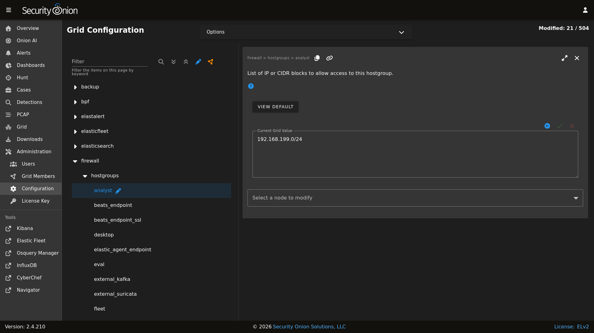

Firewall
This section will cover both network firewalls outside of Security Onion and the host-based firewall built into Security Onion.
Network Firewalls
This first sub-section will discuss network firewalls outside of Security Onion.
Internet Communication
When configuring network firewalls for Internet-connected deployments (non-Airgap), you’ll want to ensure that the deployment can connect outbound (TCP/443) to the following:
raw.githubusercontent.com (Security Onion public key)
sigs.securityonion.net (Signature files for Security Onion containers)
ghcr.io (Container downloads)
pkg-containers.githubusercontent.com (Container downloads)
rules.emergingthreatspro.com (Emerging Threats IDS rules)
rules.emergingthreats.net (Emerging Threats IDS open rules)
github.com (Strelka and Sigma rules updates)
objects.githubusercontent.com (Strelka and Sigma rules updates)
If you are using our ISO image, you will also need access to the following:
repo.securityonion.net (primary repo for Oracle Linux package updates)
repo-alt.securityonion.net (secondary repo for Oracle Linux package updates)
so-repo-east.s3.us-east-005.backblazeb2.com (secondary repo for Oracle Linux package updates)
If you are not using our ISO image and are instead performing a Network Installation, you will also need access to the following:
update repo for whatever base OS you’re installing on (OS packages)
download.docker.com (Docker packages)
repo.saltstack.com (Salt packages)
If you choose to enable GeoIP updates for Elasticsearch, you will also need access to the following:
geoip.elastic.co
storage.googleapis.com
If you choose to enable the Snort Talos ruleset, you will also need access to the following:
www.snort.org
Node Communication
When configuring network firewalls for distributed deployments, you’ll want to ensure that nodes can connect as shown in the table below. Please note that some of the sources and destinations listed in the table have specific definitions:
Security Onion grid nodesincludes any node joined to your manager. This includes search nodes, sensors, fleet nodes, receiver nodes, and IDH nodes.Search nodesare grid nodes that run Elasticsearch and join to the manager to enlarge its Elastic cluster.Elastic cluster nodesinclude the search nodes and the manager itself.Endpoint Elastic Agentsincludes any endpoint where you have deployed the Elastic Agent and want to send the data to your Security Onion grid.
Source (SRC) |
Destination (DST) |
Destination Port(s) (TCP) |
Description |
|---|---|---|---|
Security Onion grid nodes |
Manager |
443, 4505, 4506, 5000, 5055, 8086, 8220, 8443 |
Management, Registry, Salt, Updates |
Security Onion grid nodes |
Fleet node |
5055, 8220 |
Elastic Agent data and management |
Security Onion grid nodes |
Receiver node |
5055 |
Elastic Agent data |
Search nodes |
Manager |
443, 4505, 4506, 5000, 5055, 8086, 8220, 8443, 9696 |
Management, Registry, Salt, Updates, Redis |
Elastic cluster nodes |
Elastic cluster nodes |
9200, 9300 |
Logstash to Elasticsearch and Elasticsearch node-to-node |
Endpoint Elastic Agents |
Manager |
8220, 8443, 5055 |
Elastic Agent management, binary updates, data |
Endpoint Elastic Agents |
Fleet node |
5055, 8220 |
Elastic Agent management and data |
Endpoint Elastic Agents |
Receiver node |
5055 |
Elastic Agent data |
Fleet node |
Receiver node |
5056 |
Logstash-to-Logstash |
Fleet node |
Manager |
5056, 9200 |
Logstash-to-Logstash and Elasticsearch node-to-node |
Manager |
IDH node |
2222 |
SSH for management |
Host Firewall
The remainder of this section will cover the host firewall built into Security Onion.
Note
Security Onion locks down the firewall by default.
Configuring Host Firewall
You can configure the firewall by going to Administration –> Configuration –> firewall –> hostgroups.
{kind=link}

If for some reason you can’t access Security Onion Console (SOC) at all, you can use the so-firewall command to allow the IP address of your web browser to connect (replacing <IP ADDRESS> with the actual IP address of your web browser):
sudo so-firewall includehost analyst <IP ADDRESS>
Reviewing Host Firewall
You can view the entire firewall configuration from the command line using the iptables command like this:
sudo iptables -nvL
Warning
You can use this command to view the iptables configuration, but please do not modify the firewall manually using iptables as it is managed by Salt. You should only make changes via the Configuration screen as shown above.
Port Groups
Port groups are a way of grouping together ports similar to a firewall port/service alias. For example, if you have a web server you might add ports 80 and 443 into a port group.
Host Groups
Host groups are similar to port groups but for storing lists of hosts that will be allowed to connect to the associated port groups.
Function
The firewall state is designed with the idea of creating port groups and host groups, each with their own alias or name, and associating the two in order to create an allow rule. A node that has a port group and host group association assigned to it will allow those hosts to connect to those ports on that node.
The default allow rules for each node are defined by its role (manager, searchnode, sensor, heavynode, etc) in the grid. Host groups and port groups can be created or modified from the manager node by going to Administration –> Configuration –> firewall –> hostgroups. When setup is run on a new node, it will ask the manager to add itself to the appropriate host groups. All node types are added to the minion host group to allow Salt communication. If you were to add a search node, you would see its IP appear in both the minion and the search_node host groups.
Advanced Firewall Config
When you go to Administration –> Configuration –> firewall, you will only see hostgroups by default. If you need to modify port groups, then you will need to click the Options menu and then enable the Show advanced settings option.
Modifying a default port group
The analyst hostgroup is allowed access to the nginx ports which are 80 and 443 by default. In this example, we will extend the default nginx port group to include a custom port.
At the top of the page, click the
Optionsmenu and then enable theShow advanced settingsoption.On the left side, go to
firewall, selectportgroups, locate thenginxportgroup, and then selecttcp.On the right side, select the manager node, specify your custom port to be added, and then click the checkmark to save the value.
If you would like to apply the rules immediately, click the
SYNCHRONIZE GRIDbutton under theOptionsmenu at the top of the page.
Creating a custom host group with a custom port group
In this example, we will add a new custom hostgroup to allow a custom set of hosts to connect to a custom port on an IDH node.
At the top of the page, click the
Optionsmenu and then enable theShow advanced settingsoption.On the left side, go to
firewall, selecthostgroups, and then selectcustomhostgroup0.On the right side, select the IDH node that you want to allow access to, add the list of hosts that require access, and then click the checkmark to save the value.
On the left side, go to
firewall, selectportgroups, selectcustomportgroup0, and then select the appropriate protocol.On the right side, select the IDH node that you want to allow access to, add your custom port, and then click the checkmark to save the value.
On the left side, go to
firewall,role, and then selectidh,chain,DOCKER-USER,hostgroups,customhostgroup0,portgroups.On the right side, select the IDH node that you want to allow access to, add the portgroup
customportgroup0, and then click the checkmark to save the value.The next time the IDH node checks in, it should get the appropriate firewall rules.